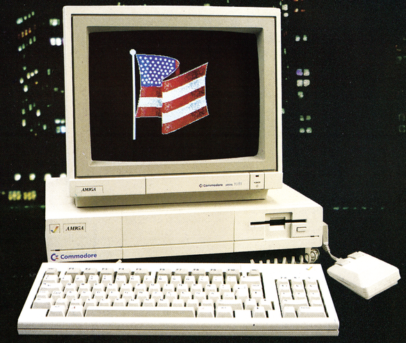
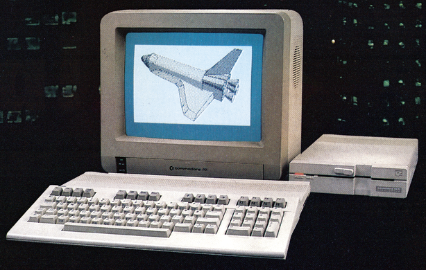

Auf nach Amerika!
Mit etwas Glück können auch Sie zu den glücklichen Hauptgewinnern einer Flugreise nach Amerika gehören oder einen von zwei Supercomputern gewinnen. Sie brauchen uns nur Ihre Meinung zu sagen.
Wünschen Sie sich mehr Tips und Tricks zu einer bestimmten Hardware oder Software? Haben Sie einen Drucker, der mit einigen Programmen nicht wie gewünscht zusammenarbeitet? Jetzt und hier haben Sie die Möglichkeit, all Ihre Wünsche, Anregungen und Kritiken zu äußern. Denn nur dann, wenn wir Ihre Wünsche kennen, können wir sie auch berücksichtigen. Mit der Teilnahme an unserem diesjährigen großen Umfragewettbewerb können Sie also aktiv an der Gestaltung Ihres 64'er-Magazins mitwirken. Gleichzeitig nehmen Sie mit Ihrem ausgefüllten Fragebogen an der Verlosung der tollen Preise im Gesamtwert von über 25000 Mark teil. So können auch Sie zu den zwei glücklichen Gewinnern einer einwöchigen Flugreise in die USA gehören: von Frankfurt nach New York, zu einer Werksbesichtigung bei Commodore nach West Chester, Philadelphia, und schließlich zur Consumer Electronics Show (CES) nach Chicago.
Aber auch die weiteren Gewinne haben es in sich. Grund genug, den Fragebogen sorgfältig ausgefüllt an uns zurückzusenden.
Was muß ich beachten?
— Wichtig ist, daß Sie möglichst offen antworten.
Der Inhalt Ihres ausgefüllten Fragebogens, ob Lob oder Kritik, hat keinen Einfluß auf Ihre Gewinnaussichten.
— Oftmals ist es möglich, auf eine Frage mehrfach zu antworten.
So zum Beispiel auch bei der Frage nach dem Computertyp, den Sie besitzen, benutzen oder den Sie sich kaufen wollen. Andernfalls machen Sie bitte immer nur ein Kreuz oder eine Angabe pro Frage.
— Ist Raum für freie Textangaben vorgegeben, wie zum Beispiel bei der Frage nach Ihrem Matrix- oder Typenraddrucker, tragen Sie bitte eine möglichst genaue und eindeutige Bezeichnung ein (zum Beispiel »Star NL-10« oder »MPS 801« beim Matrixdruckertyp). Ist nicht genügend Raum für Ihre Textangaben vorgegeben, tragen Sie bitte nur die für Sie wichtigsten Punkte ein.
— Den Fragebogen können Sie selbstverständlich vor dem Ausfüllen einmal kopieren; Sie brauchen also nicht Ihr Heft zu zerschneiden, um mitmachen zu können.
— Wenn Sie den Fragebogen vollständig ausgefüllt haben, schicken Sie ihn bitte mit Ihrer genauen Postanschrift an:
Markt & Technik
Verlag Aktiengesellschaft
Stichwort: 64'er-Umfrage
Hans-Pinsel-Str.2
8013 Haar bei München
Einsendeschluß ist der 31. Januar 1987
Der Rechtsweg ist ausgeschlossen.
Mitarbeiter der Markt & Technik Verlag AG sowie deren Angehörige sind von der Teilnahme ausgeschlossen.
Wir danken der Firma Commodore, die uns die vier Hauptgewinne zur Verfügung stellte.
(aw/nj)1. und 2. Preis
Je ein Flug mit einwöchigem Aufenthalt in den USA in Begleitung unseres stellvertretenden Chefredakteurs, Albert Absmeier.
3. Preis
Ein Amiga-Basispaket, bestehend aus Zentraleinheit mit 512 KByte RAM, integriertem 3½-Zoll-Diskettenlaufwerk, deutscher Tastatur, Maus und Systemsoftware. Als Bildschirm sind schon vorhandene Farbmonitore oder Farbfernsehgeräte anschließbar.

4. Preis
Ein Commodore C 128 mit 128 KByte RAM. Anschließbar sind die Diskettenstationen 1541/ 1570/ 1571, alle Fernsehgeräte sowie Monochrom- und RGB-Monitore.

5. — 15. Preis
Je ein professionelles Programm für den C 128 nach Wahl:
Wordstar
dBase II
Multiplan
16. — 25. Preis
Je ein Jahresabonnement des Magazins 64'er.
26. — 50. Preis
Je ein Buchgutschein im Werte von 50 Mark der Markt&Technik Verlag AG
51. — 100. Preis
Je ein 64'er-T-Shirt